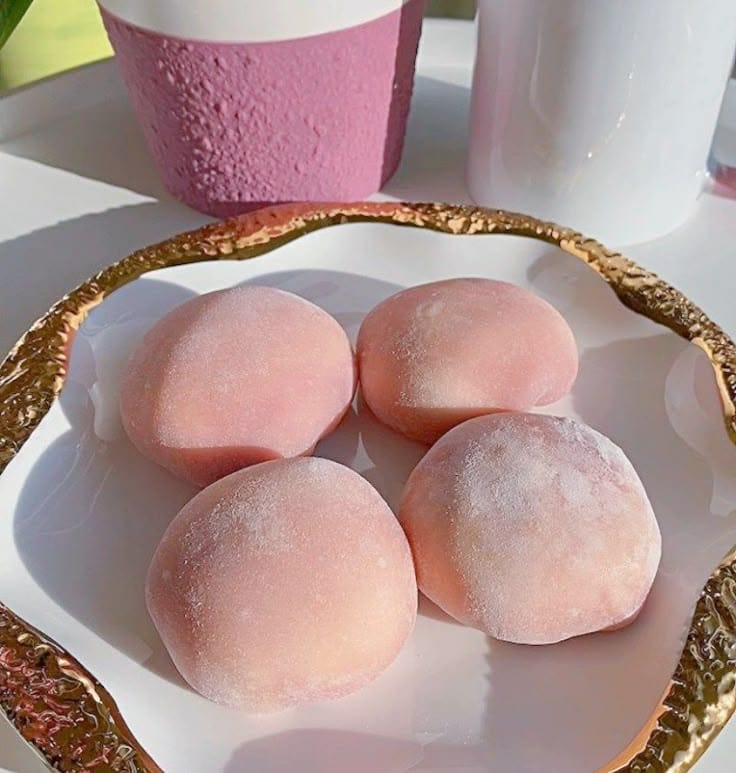
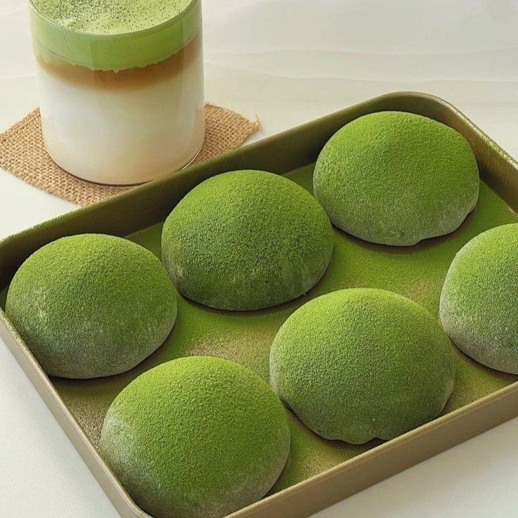
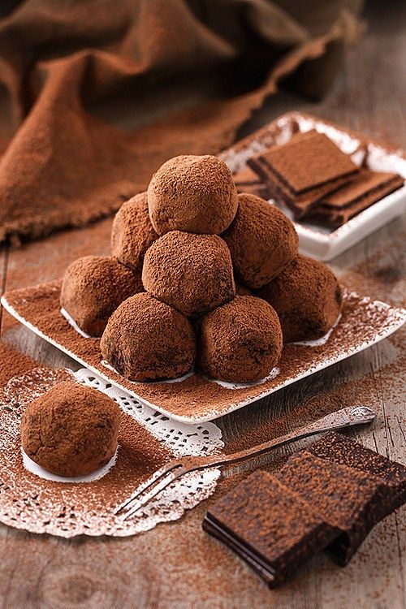
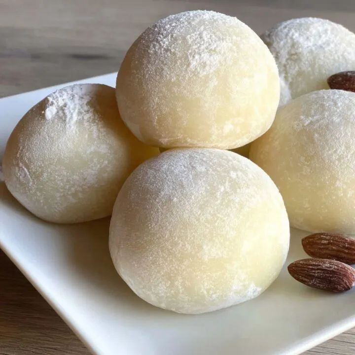
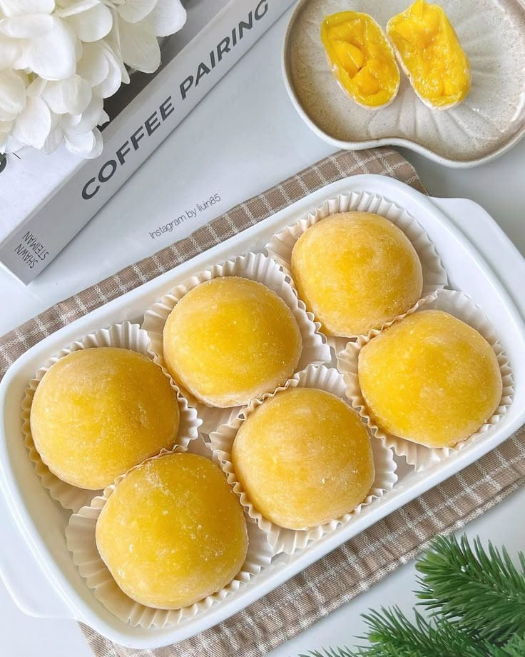
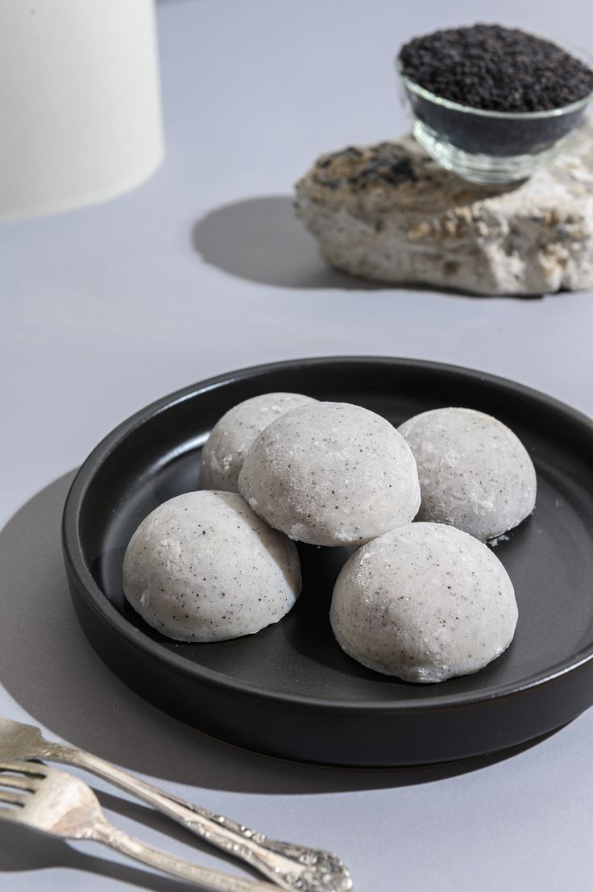

Beragam Varian Mochi yang Populer 🌸
Nikmati berbagai rasa mochi yang lembut, manis, dan menggugah selera. Setiap varian punya keunikan rasa yang berbeda, dari klasik hingga modern!

Mochi Stroberi 🍓
Manis dan segar! Rasa stroberi yang lembut berpadu dengan kulit mochi kenyal yang memanjakan lidah.

Mochi Matcha 🍃
Wangi matcha dan rasa manis pahit yang lembut menjadikan mochi ini pilihan favorit pecinta teh hijau.

Mochi Coklat 🍫
Kenikmatan coklat lumer di dalam mochi lembut. Paduan klasik antara manis, kenyal, dan creamy.

Mochi Original 🤍
Rasa klasik mochi dengan sentuhan manis ringan dan aroma khas tepung ketan. Sederhana tapi menenangkan.

Mochi Mangga 🥭
Mochi dengan isian rasa mangga tropis yang harum dan segar, cocok untuk pecinta buah.

Mochi Oreo 🍪
Gabungan sempurna antara kulit mochi lembut dan isian krim oreo renyah — modern, manis, dan memikat!